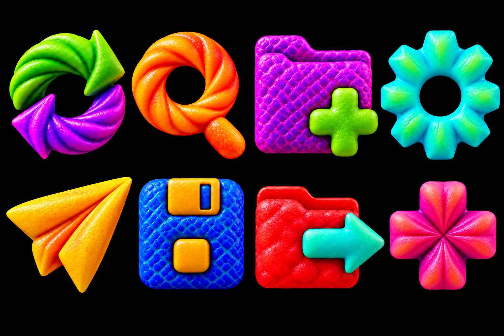

Design exploration
Fruit Icon Language
Invented alien fruits, richly sculpted skins, and colorful button shapes for a black interface.
Outside surfaces
Alien fruit skins
Eight colorful, tactile directions for familiar controls.

The idea
Color with a purpose
Each icon is the button: a distinctive silhouette with a flat back, colorful material, and textured skin related to its shape. Highlights stay colored and restrained against a pure black background.
These are concept studies. Individual production icons, small-size legibility, and actual interface contrast still need to be developed and checked.